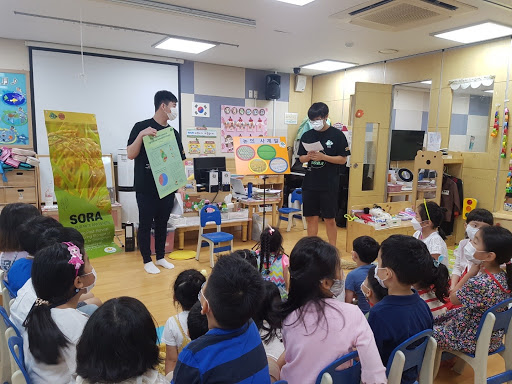

As much as it is important to establish a feasible and effective biological solution to address global issues, raising social awareness is vital to make actual positive change. Therefore, not only did we develop a biological design to reduce post-harvest losses in agricultural practices, but we also made efforts to increase awareness of this issue at hand. As our survey responses displayed, approximately 70% of people did not know the concept and issue of postharvest. Thus, our team decided it was our responsibility, through human practices, to gain important and accurate knowledge from professionals and experts and share the valuable information to the general public.
Firstly, our team interviewed several professors and experts on diverse fields to obtain more information and knowledge regarding the post-harvest issues (specifically in Sri Lanka) and our experimental design’s biological aspects. We collected 176
Our next step was to share the valuable information we acquired with other students and teachers. By holding multiple discussions with each other, we decided on how to execute this process. We decided to divide the level of education into two parts--one for young students (kindergarteners) and one for middle/high schoolers. For middle/high schoolers, we held online seminars through free periods during online learning in school. To make these possible, we also designed and created posters, banners, and sticker boards that would facilitate our presentation to others and our project. We used these posters and boards for our campaigns in the streets and in relevant rice museums.
Human practice conclusion
We decided to visit the kindergarteners
Due to the continuity of online learning, we hosted online seminars during free periods of school time. For about two weeks, we advertised about the online seminar to gain the amount of audience interested to join. On September 14th, we held the first online seminar in which we screen shared, showed our promotion video, and presented a couple slides that portrayed a brief overview of our project’s issue and how we would address it.